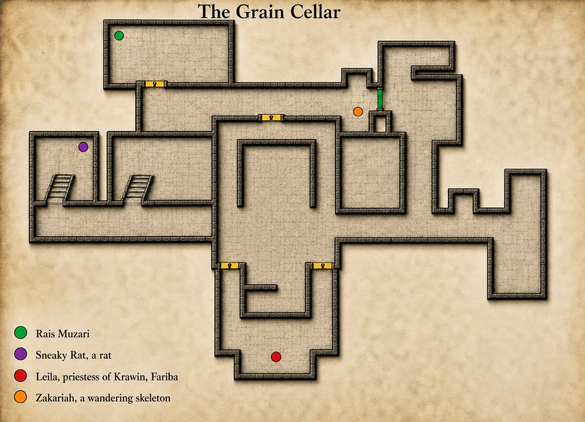
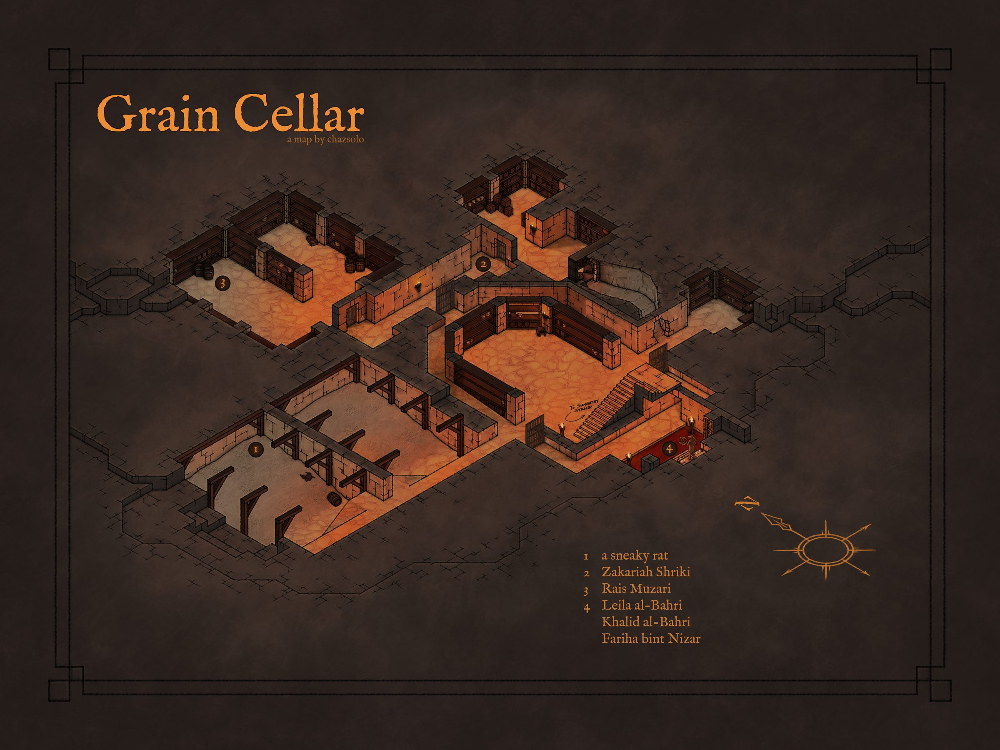
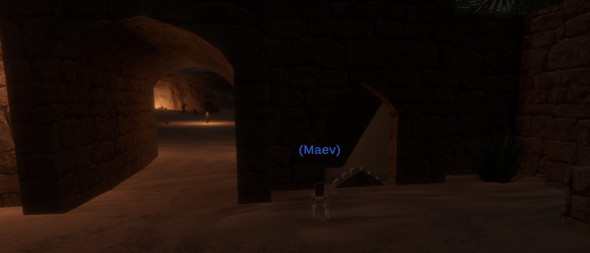

Grain Cellar
Little is known of the Grain Cellar at this time other than it has been overrun by undead and cultists. The entrance to the Grain Cellar is located in the second to last building along the river in Sungreet Stand. Enter the courtyard, then turn 180 degrees around to you're facing the exit. Click the non-descript wall to the right of the gate to reveal a secret entrance.
Map



Named mobs
| Named | Lvl | Race / class | Where | Known loot (hover) |
|---|---|---|---|---|
| a sneaky rat | 30 | Rat / Fighter | - | Rat's Nest Greaves, Burrow-Hide Pants |
| Zakariah Shriki | 31 | Skeleton / Shadow Knight | - | Skeletal Mantle, Grain Cellar Key, Shriki's Rivet-Boots |
| a priestess of Kravvin | 32 | Human / Cleric | - | Dagger of Sacrifice |
| Rais Muzari | 32 | Ghost / Enchanter | - | Rusty Steel Plate Helm, Spectral Helm |
| Leila al-Bahri | ~33-34 | Human / Enchanter | - | Garb of Sacrifice, Enthralling Bracelet |
| Khalid al-Bahri | ~34-35 | Human / Necromancer | - | Bloodsoaked Amulet |
| Fariha bint Nizar | - | Ghost | - |
Mobs & NPCs (camps by level)
Rows with a level are huntable camps; rows without are usually town NPCs or not yet documented.
| Name | Lvl | Race | Class | Where | Notes |
|---|---|---|---|---|---|
| a ghostly cleric | ~30-32 | Ghost | Cleric | - | |
| a ghostly fighter | ~30-32 | Ghost | Fighter | - | |
| a ghostly figure | ~30-32 | Ghost | Monk | - | |
| a skeletal worker | ~30-32 | Skeleton | Paladin | - | |
| a craven cultist | ~31-32 | Human | Fighter | - | |
| a devoted cultist | ~31-32 | Human | Cleric | - | |
| a diminished ghost | 31-32 | Ghost | Rogue | - | |
| a lingering ghost | 31-32 | Ghost | Enchanter | - | Spectral Seal |
| a nefarious cultist | ~31-32 | Human | Necromancer | - | Dark Harvest |
| a skeletal captive | ~31-32 | Skeleton | Wizard | - | |
| a skeletal farmer | ~31-32 | Skeleton | - | - | |
| a skeletal slave | ~31-32 | Skeleton | Fighter | - | |
| a wandering skeleton | 31-32 | Skeleton | Fighter | - |
Quests
| Quest | Reward | Giver | Min lvl |
|---|---|---|---|
| Fariha's Shawl Quest | Fariha's Shawl | Fariha bint Nizar | - |
Gear that drops here
| Slot | Item | Key stats (wiki) | How to get | Lvl | Classes |
|---|---|---|---|---|---|
| Bone Chips | no stats listed on wiki | Quest: Bone Chips for Moon Dances (Moon Dances, Faelindral, min lvl 1) Quest: Bone Chips for Squire Ryland (Squire Ryland, Night Harbor, min lvl 1) Quest: Druid Starter Quest (Faelindral) (Sylvarya Starveil, Faelindral, min lvl 1) Quest: Find Delilah's Pet (Delilah, Underdocks, min lvl 1) | 1 | NEC SHD | |
| Primary, Secondary | Torch | Effect: Torch (Passive. Must Equip. Level: 1) | Quest: Pests at the Farm (Farmer Ammar, Night Harbor, min lvl 1) Vendor: A goods merchant — Night Harbor, Shallow Shoals; A greedy halfling — Night Harbor; A shifty elf — Evershade Weald Crafted: Survival (trivial X) Drop: A rotting skeleton (lvl 1) — Night Harbor, Noob Yard | 1 | All classes |
| Secondary | Worn Ironbark Buckler | AC 10 | Drop: a Plagueborn knight (lvl ~42-44) — Fallen Pass, Western Beach Shrine, Elder Drake area Drop: a Plagueborn worshipper (lvl ~36-37) — Fallen Pass, Undead Citizens Drop: a Plagueborn veteran (lvl ~42-44) — Fallen Pass, Elder Drake area Drop: a dusty skeleton (lvl -) — Fallen Pass, - | 17 | BRD BST CLR DRU FTR INQ PAL RNG ROG SHD SHM SPB |
| Primary, Secondary | Cracked Ironbark Staff | DMG 9 / DLY 33 | Drop: a poacher (lvl ~28-30) — Keeper's Bight, - Drop: a poacher bruiser (lvl 28-30) — Keeper's Bight, Poacher Camp, Bear Cave Drop: a poacher pathfinder (lvl 28-30) — Keeper's Bight, Poacher Camp, Bear Cave Named drop: Poacher Garrus (lvl >35) — Keeper's Bight, Poacher Camp | 27 | All classes |
| Shoulders | Rusty Iron Chain Shoulderguards | AC 13 | Drop: a cultist guard (lvl 44) — Glass Flats, - Drop: a cultist lookout (lvl 43) — Glass Flats, - Drop: a Plagueborn knight (lvl ~42-44) — Fallen Pass, Western Beach Shrine, Elder Drake area Drop: a Plagueborn watchman (lvl ~52-53) — Fallen Pass, Upper Saman | 27 | BRD CLR FTR INQ PAL RNG ROG SHD SHM |
| Primary, Secondary | Rusty Iron Dagger | DMG 6 / DLY 23 | Drop: a corrupted enchantress (lvl unconfirmed) — Shallow Shoals Drop: a Witchguard venator (lvl unconfirmed) — Shallow Shoals Drop: a Witchguard veles (lvl unconfirmed) — Shallow Shoals Named drop: Champion of Muurtu (lvl ~45) — Shallow Shoals, Black Shoals Fortress | 27 | ARC BRD BST ELE ENC FTR INQ NEC RNG ROG SHD SHM SPB WIZ |
| Secondary | Rusty Iron Kite Shield | AC 13 | Drop: a Witchguard cultor (lvl ~39+) — Shallow Shoals, Black Shoals Fortress Drop: a Witchguard veles (lvl unconfirmed) — Shallow Shoals Drop: a Witchguard myrmidon (lvl unconfirmed) — Shallow Shoals Drop: Fizzle Screwtape (lvl -) — Shallow Shoals, Zaedin's Landing | 27 | BRD FTR INQ PAL RNG SHD |
| Primary | Rusty Iron Long Spear | DMG 13 / DLY 48 | Drop: a Witchguard cultor (lvl ~39+) — Shallow Shoals, Black Shoals Fortress Drop: a Witchguard shaman (lvl unconfirmed) — Shallow Shoals Drop: a Witchguard medicus (lvl unconfirmed) — Shallow Shoals Drop: a corrupted adept (lvl unconfirmed) — Shallow Shoals | 27 | ARC BRD BST FTR INQ RNG ROG SHD SHM |
| Primary | Rusty Iron Maul | DMG 18 / DLY 52 | Drop: a Witchguard princeps (lvl ~39+) — Shallow Shoals, Black Shoals Fortress Drop: a Witchguard defiler (lvl unconfirmed) — Shallow Shoals Drop: High Priest of Muurtu (lvl unconfirmed) — Shallow Shoals Drop: a Witchguard cultor (lvl ~39+) — Shallow Shoals, Black Shoals Fortress | 27 | BRD BST CLR DRU FTR INQ MNK PAL RNG ROG SHD SHM SPB |
| Back | Rusty Iron Plate Cloak | AC 5 | Drop: a cultist lookout (lvl 43) — Glass Flats, - Drop: a crystallized skeleton (lvl ~35-40) — Glass Flats, - Drop: a highwayman prospect (lvl ~31+) — Glass Flats, - Drop: a tormented guardian (lvl unconfirmed) — Glass Flats | 27 | CLR FTR INQ PAL SHD |
| Hands | Rusty Iron Plate Gauntlets | AC 13 | Drop: a weeping visitor (lvl 29-38) — Sunken Resort, - Drop: Tormented Soul (lvl -) — Fallen Watch, - Drop: a plague-sworn squire (lvl unconfirmed) — Fallen Watch Drop: a zombified rat (lvl 45-60) — Fallen Watch, - | 27 | CLR FTR INQ PAL SHD |
| Head | Rusty Iron Plate Helm | AC 15 | Drop: a Witchguard myrmidon (lvl unconfirmed) — Shallow Shoals Drop: a Witchguard veles (lvl unconfirmed) — Shallow Shoals Drop: a Witchguard serverat (lvl ~39+) — Shallow Shoals, Black Shoals Fortress Drop: a Valtheris elder (lvl -) — Rothold, - | 27 | CLR FTR INQ PAL SHD |
| Primary, Secondary | Rusty Iron Scythe | DMG 8 / DLY 28 | Drop: a Witchguard shaman (lvl unconfirmed) — Shallow Shoals Drop: a Witchguard medicus (lvl unconfirmed) — Shallow Shoals Drop: a Witchguard princeps (lvl ~39+) — Shallow Shoals, Black Shoals Fortress Drop: a Witchguard venator (lvl unconfirmed) — Shallow Shoals | 27 | BST DRU FTR INQ NEC RNG SHD SPB |
| Primary, Secondary | Rusty Iron Spear | DMG 9 / DLY 34 | Drop: a headless vacationer (lvl 29-38) — Sunken Resort, - Drop: a crystallized skeleton (lvl ~35-40) — Glass Flats, - Drop: a road deacon (lvl ~31+) — Glass Flats, - Drop: a Plagueborn knight (lvl ~42-44) — Fallen Pass, Western Beach Shrine, Elder Drake area | 27 | ARC BRD BST FTR INQ RNG ROG SHD SHM |
| Hands | Tattered Cotton Gloves | AC 4 | Drop: a poacher (lvl ~28-30) — Keeper's Bight, - Drop: a poacher bruiser (lvl 28-30) — Keeper's Bight, Poacher Camp, Bear Cave Drop: a poacher herbalist (lvl 28-30) — Keeper's Bight, Poacher Camp Named drop: Seamas Growt (lvl ~38+) — Fallen Pass, Pillars(wanders) | 27 | All classes |
| Neck | Tattered Cotton Gorget | AC 3 | Named drop: Poacher Garrus (lvl >35) — Keeper's Bight, Poacher Camp Drop: a poacher (lvl ~28-30) — Keeper's Bight, - Drop: a treant (lvl 38) — Glinting Hollow, - Drop: a cultist guard (lvl 44) — Glass Flats, - | 27 | All classes |
| Waist | Tattered Leather Belt | AC 3 | Drop: a cultist guard (lvl 44) — Glass Flats, - Drop: a Witchguard venator (lvl unconfirmed) — Shallow Shoals Drop: a Witchguard myrmidon (lvl unconfirmed) — Shallow Shoals Drop: a Witchguard sacramir (lvl ~39+) — Shallow Shoals, Black Shoals Fortress | 27 | ARC BRD BST CLR DRU FTR INQ MNK PAL RNG ROG SHD SHM SPB |
| Back | Tattered Leather Cloak | AC 3 | Drop: a cultist lookout (lvl 43) — Glass Flats, - Drop: a Witchguard shaman (lvl unconfirmed) — Shallow Shoals Drop: a Witchguard venator (lvl unconfirmed) — Shallow Shoals Drop: a Witchguard signifer (lvl ~41+) — Shallow Shoals, Black Shoals Fortress | 27 | ARC BRD BST CLR DRU FTR INQ MNK PAL RNG ROG SHD SHM SPB |
| Face | Tattered Leather Mask | AC 7 | Drop: a Plagueborn knight (lvl ~42-44) — Fallen Pass, Western Beach Shrine, Elder Drake area Drop: a Plagueborn faithful (lvl ~36-37) — Fallen Pass, Undead Citizens Drop: a Plagueborn citizen (lvl ~36-37) — Fallen Pass, Undead Citizens Drop: a smuggler (lvl unconfirmed) — Fallen Pass | 27 | ARC BRD BST CLR DRU FTR INQ MNK PAL RNG ROG SHD SHM SPB |
| Shoulders | Tattered Leather Shoulderpads | AC 11 | Named drop: Seamas Growt (lvl ~38+) — Fallen Pass, Pillars(wanders) Drop: a Plagueborn worshipper (lvl ~36-37) — Fallen Pass, Undead Citizens Drop: a Plagueborn veteran (lvl ~42-44) — Fallen Pass, Elder Drake area Drop: a Plagueborn citizen (lvl ~36-37) — Fallen Pass, Undead Citizens | 27 | ARC BRD BST CLR DRU FTR INQ MNK PAL RNG ROG SHD SHM SPB |
| Primary | Worn Ironbark Great Staff | DMG 16 / DLY 46 | Drop: a Witchguard cultor (lvl ~39+) — Shallow Shoals, Black Shoals Fortress Drop: a corrupted monk (lvl unconfirmed) — Shallow Shoals Drop: a Witchguard defiler (lvl unconfirmed) — Shallow Shoals Drop: a Benu Dhai brother (lvl unconfirmed) — Shallow Shoals | 27 | BST CLR DRU ELE ENC FTR MNK NEC PAL SHM SPB WIZ |
| Primary, Secondary | Rusty Iron Axe | DMG 11 / DLY 42 | Drop: a Witchguard defiler (lvl unconfirmed) — Shallow Shoals Drop: a Witchguard signifer (lvl ~41+) — Shallow Shoals, Black Shoals Fortress Drop: a Witchguard serverat (lvl ~39+) — Shallow Shoals, Black Shoals Fortress Drop: a Plagueborn veteran (lvl ~42-44) — Fallen Pass, Elder Drake area | 28 | BST FTR INQ PAL RNG SHD SPB |
| Primary | Rusty Iron Battle Axe | DMG 18 / DLY 54 | Drop: a Witchguard oracle (lvl unconfirmed) — Shallow Shoals Drop: a Witchguard defiler (lvl unconfirmed) — Shallow Shoals Drop: a corrupted monk (lvl unconfirmed) — Shallow Shoals Drop: a Witchguard stalker (lvl unconfirmed) — Shallow Shoals | 28 | BST FTR INQ PAL SHD |
| Head | Rusty Iron Chain Coif | AC 12 | Drop: a poacher (lvl ~28-30) — Keeper's Bight, - Drop: a poacher bruiser (lvl 28-30) — Keeper's Bight, Poacher Camp, Bear Cave Drop: a poacher pathfinder (lvl 28-30) — Keeper's Bight, Poacher Camp, Bear Cave Drop: a Claw shafi (lvl ~35) — Night Harbor, Claw Compound | 28 | BRD CLR FTR INQ PAL RNG ROG SHD SHM |
| Hands | Rusty Iron Chain Gloves | AC 11 | Drop: a Plagueborn knight (lvl ~42-44) — Fallen Pass, Western Beach Shrine, Elder Drake area Drop: a Plagueborn citizen (lvl ~36-37) — Fallen Pass, Undead Citizens Drop: a Plagueborn worshipper (lvl ~36-37) — Fallen Pass, Undead Citizens Drop: a Plagueborn watchman (lvl ~52-53) — Fallen Pass, Upper Saman | 28 | BRD CLR FTR INQ PAL RNG ROG SHD SHM |
| Primary | Rusty Iron Great Scythe | DMG 16 / DLY 46 | Drop: a Plagueborn veteran (lvl ~42-44) — Fallen Pass, Elder Drake area Drop: a Plagueborn knight (lvl ~42-44) — Fallen Pass, Western Beach Shrine, Elder Drake area Drop: a smuggler (lvl unconfirmed) — Fallen Pass Drop: a Plagueborn patrolman (lvl ~34-36) — Fallen Pass, Undead Citizens | 28 | BST DRU FTR INQ NEC RNG SHD SPB |
| Primary | Rusty Iron Greatsword | DMG 13 / DLY 50 | Drop: a Witchguard stalker (lvl unconfirmed) — Shallow Shoals Drop: a Witchguard medicus (lvl unconfirmed) — Shallow Shoals Drop: a Witchguard signifer (lvl ~41+) — Shallow Shoals, Black Shoals Fortress Drop: a Witchguard cultor (lvl ~39+) — Shallow Shoals, Black Shoals Fortress | 28 | BRD BST FTR INQ PAL RNG SHD SPB |
| Shirt | Rusty Iron Plate Arming Doublet | no stats listed on wiki | Named drop: Poacher Tolan (lvl >35) — Keeper's Bight, Poacher Camp Drop: a poacher bruiser (lvl 28-30) — Keeper's Bight, Poacher Camp, Bear Cave Drop: a poacher (lvl ~28-30) — Keeper's Bight, - Drop: a Witchguard princeps (lvl ~39+) — Shallow Shoals, Black Shoals Fortress | 28 | CLR FTR INQ PAL SHD |
| Wrist | Rusty Iron Plate Bracer | AC 11 | Drop: a cultist lookout (lvl 43) — Glass Flats, - Drop: a cultist guard (lvl 44) — Glass Flats, - Drop: a grizzled raider (lvl ~31+) — Glass Flats, - Drop: a Plagueborn priest (lvl ~42-44) — Fallen Pass, Elder Drake area | 28 | CLR FTR INQ PAL SHD |
| Waist | Rusty Iron Plate Girdle | AC 5 | Drop: a wide-eyed reveler (lvl 29-38) — Sunken Resort, - Drop: a bloodbound defender (lvl -) — Rothold, - Drop: a Valtheris priest (lvl -) — Rothold, - Drop: a Valtheris devout (lvl -) — Rothold, - | 28 | CLR FTR INQ PAL SHD |
| Primary, Secondary | Rusty Iron Shortsword | DMG 7 / DLY 26 | Drop: a corrupted monk (lvl unconfirmed) — Shallow Shoals Drop: a Witchguard medicus (lvl unconfirmed) — Shallow Shoals Drop: a Witchguard veles (lvl unconfirmed) — Shallow Shoals Drop: a Witchguard serverat (lvl ~39+) — Shallow Shoals, Black Shoals Fortress | 28 | ARC BRD BST FTR INQ PAL RNG ROG SHD SPB WIZ |
| Primary, Secondary | Rusty Iron Warhammer | DMG 8 / DLY 30 | Drop: a Witchguard signifer (lvl ~41+) — Shallow Shoals, Black Shoals Fortress Drop: a Witchguard cultor (lvl ~39+) — Shallow Shoals, Black Shoals Fortress Drop: a Witchguard sacramir (lvl ~39+) — Shallow Shoals, Black Shoals Fortress Drop: a Witchguard veles (lvl unconfirmed) — Shallow Shoals | 28 | BRD BST CLR DRU FTR INQ MNK PAL RNG ROG SHD SHM SPB |
| Waist | Tattered Cotton Belt | AC 2 | Drop: a poacher (lvl ~28-30) — Keeper's Bight, - Drop: a poacher pathfinder (lvl 28-30) — Keeper's Bight, Poacher Camp, Bear Cave Drop: a poacher bruiser (lvl 28-30) — Keeper's Bight, Poacher Camp, Bear Cave Drop: a Plagueborn citizen (lvl ~36-37) — Fallen Pass, Undead Citizens | 28 | All classes |
| Feet | Tattered Cotton Boots | AC 4 | Drop: a Witchguard cultor (lvl ~39+) — Shallow Shoals, Black Shoals Fortress Drop: a Witchguard signifer (lvl ~41+) — Shallow Shoals, Black Shoals Fortress Drop: a corrupted enchantress (lvl unconfirmed) — Shallow Shoals Drop: a corrupted adept (lvl unconfirmed) — Shallow Shoals | 28 | All classes |
| Wrist | Tattered Cotton Bracer | AC 3 | Drop: a Plagueborn veteran (lvl ~42-44) — Fallen Pass, Elder Drake area Drop: a Plagueborn citizen (lvl ~36-37) — Fallen Pass, Undead Citizens Drop: a smuggler (lvl unconfirmed) — Fallen Pass Named drop: Qassem Brolt (lvl 32) — Fallen Pass, Smuggler Caves | 28 | All classes |
| Head | Tattered Cotton Cap | AC 5 | Drop: a poacher (lvl ~28-30) — Keeper's Bight, - Drop: a poacher bruiser (lvl 28-30) — Keeper's Bight, Poacher Camp, Bear Cave Drop: a cultist guard (lvl 44) — Glass Flats, - Drop: a cultist lookout (lvl 43) — Glass Flats, - | 28 | All classes |
| Back | Tattered Cotton Cape | AC 2 | Drop: a Witchguard venator (lvl unconfirmed) — Shallow Shoals Drop: a corrupted priestess (lvl unconfirmed) — Shallow Shoals Drop: a Witchguard defiler (lvl unconfirmed) — Shallow Shoals Drop: a Witchguard veles (lvl unconfirmed) — Shallow Shoals | 28 | All classes |
| Chest | Tattered Cotton Robe | AC 7 | Drop: a poacher (lvl ~28-30) — Keeper's Bight, - Drop: a poacher bruiser (lvl 28-30) — Keeper's Bight, Poacher Camp, Bear Cave Drop: a cultist guard (lvl 44) — Glass Flats, - Drop: a bone fiend (lvl -) — Glass Flats, - | 28 | ELE ENC NEC WIZ |
| Shirt | Tattered Cotton Shirt | no stats listed on wiki | Drop: a Witchguard defiler (lvl unconfirmed) — Shallow Shoals Drop: a Witchguard medicus (lvl unconfirmed) — Shallow Shoals Drop: a Witchguard veles (lvl unconfirmed) — Shallow Shoals Drop: a Witchguard serverat (lvl ~39+) — Shallow Shoals, Black Shoals Fortress | 28 | All classes |
| Chest | Tattered Cotton Tunic | AC 7 | Drop: a Witchguard cultor (lvl ~39+) — Shallow Shoals, Black Shoals Fortress Drop: a Witchguard princeps (lvl ~39+) — Shallow Shoals, Black Shoals Fortress Drop: a Witchguard defiler (lvl unconfirmed) — Shallow Shoals Drop: a Witchguard shaman (lvl unconfirmed) — Shallow Shoals | 28 | All classes |
| Face | Tattered Cotton Veil | AC 2 | Drop: a Plagueborn knight (lvl ~42-44) — Fallen Pass, Western Beach Shrine, Elder Drake area Drop: a Plagueborn citizen (lvl ~36-37) — Fallen Pass, Undead Citizens Drop: a Plagueborn worshipper (lvl ~36-37) — Fallen Pass, Undead Citizens Drop: a Plagueborn scholar (lvl ~36-37) — Fallen Pass, Undead Citizens | 28 | All classes |
| Hands | Tattered Leather Gloves | AC 8 | Drop: a Plagueborn veteran (lvl ~42-44) — Fallen Pass, Elder Drake area Drop: a Plagueborn knight (lvl ~42-44) — Fallen Pass, Western Beach Shrine, Elder Drake area Drop: an assistant jailer (lvl unconfirmed) — Fallen Pass Drop: a Plagueborn worshipper (lvl ~36-37) — Fallen Pass, Undead Citizens | 28 | ARC BRD BST CLR DRU FTR INQ MNK PAL RNG ROG SHD SHM SPB |
| Neck | Tattered Leather Gorget | AC 4 | Drop: a pale jailer (lvl 40) — Night Harbor, Pale Guard Tower Drop: a Claw henchman (lvl ~35) — Night Harbor, Claw Compound Drop: a sand giant raider (lvl ~45) — Vale of Zintar, Fishing Camp Drop: a Dustrend legionary (lvl ~29-30) — Vale of Zintar, - | 28 | ARC BRD BST CLR DRU FTR INQ MNK PAL RNG ROG SHD SHM SPB |
| Shirt | Tattered Leather Vest | no stats listed on wiki | Drop: a Plagueborn priest (lvl ~42-44) — Fallen Pass, Elder Drake area Named drop: Kowmeh Lalen (lvl 40) — Fallen Pass, Plagueborn Citizens, NE Corner Drop: a smuggler (lvl unconfirmed) — Fallen Pass Drop: an assistant jailer (lvl unconfirmed) — Fallen Pass | 28 | ARC BRD BST CLR DRU FTR INQ MNK PAL RNG ROG SHD SHM SPB |
| Range | Worn Ironbark Bow | DMG 13 / DLY 40 | Drop: a cultist lookout (lvl 43) — Glass Flats, - Drop: a crystallized skeleton (lvl ~35-40) — Glass Flats, - Drop: a treant (lvl 38) — Glinting Hollow, - Drop: a flourishing treant (lvl 38) — Glinting Hollow, - | 28 | ARC BST FTR PAL RNG ROG SHD SPB |
| Primary, Secondary | Dark Harvest | DMG 11 / DLY 23, STR +2, AGI +2, DEX +4, Effect: Life Draw (Chance On Hit. Level: 1) | Drop: a nefarious cultist (lvl ~31-32) — Grain Cellar, - | 31 | ARC BRD BST DRU FTR INQ NEC PAL RNG ROG SHD SPB WIZ |
| Feet | Shriki's Rivet-Boots | AC 17, STR +3, HP +25 | Named drop: Zakariah Shriki (lvl 31) — Grain Cellar, - | 31 | BRD CLR FTR INQ PAL RNG ROG SHD SHM |
| Shoulders | Skeletal Mantle | AC 30, STR +5, STA +4 | Named drop: Zakariah Shriki (lvl 31) — Grain Cellar, - | 31 | CLR FTR INQ PAL SHD |
| Finger | Spectral Seal | STR +2, INT +2, HP +5, Mana +5, SV Magic +4 | Drop: a lingering ghost (lvl 31-32) — Grain Cellar, - | 31 | All classes |
| Range | Dagger of Sacrifice | STA +4, WIS +4, HP +10, Mana +10 | Named drop: a priestess of Kravvin (lvl 32) — Grain Cellar, - | 32 | All classes |
| Head | Rusty Steel Plate Helm | AC 24 | Named drop: Rais Muzari (lvl 32) — Grain Cellar, - Drop: a Plagueborn watchman (lvl ~52-53) — Fallen Pass, Upper Saman Drop: a Plagueborn myrmidon (lvl ~54-55) — Fallen Pass, Upper Saman Drop: a Plagueborn maid (lvl ~52-53) — Fallen Pass, Upper Saman | 32 | CLR FTR INQ PAL SHD |
| Head | Spectral Helm | AC 30, STR +3, STA +2, Mana +15, SV Magic +2 | Named drop: Rais Muzari (lvl 32) — Grain Cellar, - | 32 | CLR FTR INQ PAL SHD |
| Wrist | Enthralling Bracelet | AC 8, STA +1, INT +3, CHA +6 | Named drop: Leila al-Bahri (lvl ~33-34) — Grain Cellar, - | 33 | All classes |
| Chest | Garb of Sacrifice | AC 17, INT +4, CHA -2, Mana +20, SV Magic +6 | Named drop: Leila al-Bahri (lvl ~33-34) — Grain Cellar, - | 33 | ELE ENC NEC WIZ |
| Neck | Bloodsoaked Amulet | AC 5, STR +4, STA +4, HP +20 | Named drop: Khalid al-Bahri (lvl ~34-35) — Grain Cellar, - | 34 | All classes |